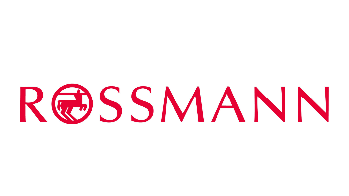
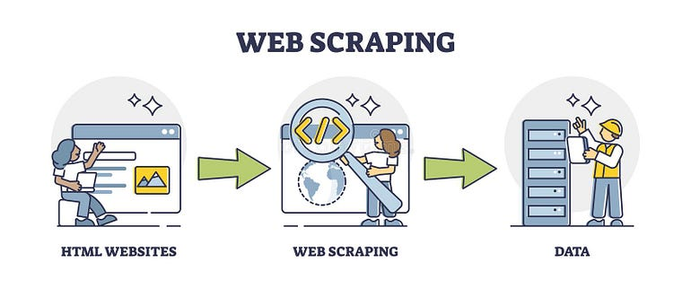

Previsão de vendas das Lojas Rossmann
Previsão de vendas da rede de lojas Rossmann nas próximas seis semanas, com base em características temporais, produtos e lojas. O intuito do projeto é ter clareza sob o retorno que as lojas proporcionam.
Ferramentas utilizadas:
- Python, Pandas, Numpy, Seaborn.
- XgBoost, Scipy e Sklearn.
- Flask
- Git e Github.

Machine Learning na Segurança do Trabalho - Prevendo a Eficiência de Extintores de Incêndio
Seria possível usar Machine Learning para prever o funcionamento de um extintor de incêndio e assim incluir uma camada adicional de segurança nas operações de uma empresa? Esse é o objetivo do Projeto. Usando dados reais disponíveis publicamente, o trabalho foi desenvolver um modelo de Machine Learning capaz de prever a eficiência de extintores de incêndio.
Ferramentas utilizadas:
- R, dplyr e Caret.
- KNN, SVM e Random Forest.
- Git e Github.

Análise de Risco no Transporte Público
Quais incidentes de trânsito ocorrem com mais frequência? Qual a faixa etária que mais se envolve em incidentes de trânsito? Qual o evento mais comum nos incidentes? Passageiros ou pedestres são as maiores vítimas dos incidentes? Essas e outras perguntas devem ser respondidas através da análise de dados reais disponíveis publicamente. Este projeto não requer Machine Learning e o trabalho é aplicar habilidades de análise e responder diversas perguntas de negócio através de gráficos e storytelling.
- Python, Pandas e Plotly.
- Jupyter Notebook.
- Git e Github.

Construção de mecanismos de captação de dados
Mecanismo de extração de dados capaz de realizar Web Scrapping da seção de artigos científicos de Inteligência Artificial do Arxiv (ou seja, https://arxiv.org/list/cs.AI/recent) e armazenar alguns dados obtidos em um arquivo do tipo CSV.
- Python, Pandas e Beautiful Soup.
- Jupyter Notebook.
- UV, Ruff, PreCommit e Bumpversion.
- Git e Github.